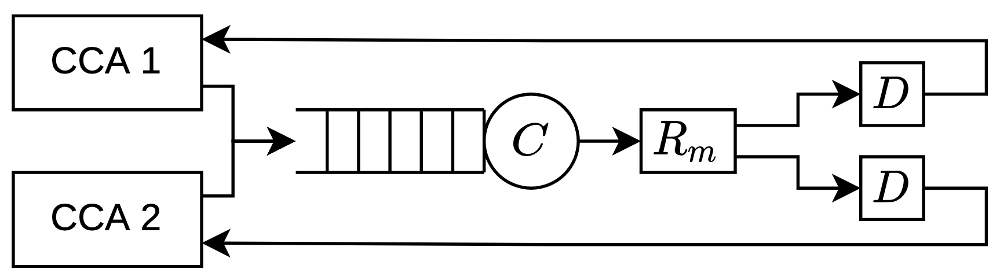

Venkat Arun
Assistant Professor, Computer Science · UT Austin
"Solving" Congestion Control
Background and context
It is said that there are two problems in computer networking: routing and congestion control. Routing is concerned with finding a path for the data to take on the network. Congestion control (or more generally, bandwidth allocation) is concerned with deciding how much network capacity is given to each task that requires it. The original vision of end-to-end congestion control algorithms (CCAs) was that the end-hosts could decide, in a fully distributed way, the rate at which they send data (divided into packets) such that they fully utilize available capacity while sharing it fairly with others who are using the same the network links. In-network bandwidth allocation mechanisms are only needed at a coarse granularity to enforce economic agreements and to provide isolation across trust domains.
This vision has not yet come to fruition. The complexity and diversity of network paths has made it extremely difficult to determine the correct sending rate from end-to-end measurements alone. This problem is exacerbated by the increasingly exacting demands of modern applicaitons: they demand low latency and the ability to quickly adapt to changing network capacity and application needs.
People have responded to this in two ways. Practitioners have deployed far more in-network bandwidth allocation mechanisms than would have been necessary if CCAs worked well. Depending on how this is done, this is either expensive, inefficient, or both.
Researchers have spent decades developing thousands of different algorithms in the hope that the next one will fullfill all the requirements. I am one of these researchers. Like many others, I am unfazed in the face of decades of failure and firmly believe that we have an approach to this problem that will finally succeed. Like delusional people everywhere, I have my reasons. Here they are:
Our approach to congestion control
Practical CCA development has been primarily an empirical exercise. While elegant theory exists and has provided coarse guidance on how to design CCAs, it does not capture many factors that critically impact CCA performance in the real world. The finer grained decisions are made empirically. Unfortunately, the internet is too complex and CCAs are too critical a factor in the internet's performance and reliably for such a haphazard empirical approach to be sufficient. We have developed two principles that we believe enable us to reason about CCA performance in real-world networks in a principled and systematic way:
- Use non-deterministic models of the network instead of stochastic ones.
- Use automated reasoning methods (classical or neural network assisted) to analyze and design CCAs under these models.
While we developed these principles for congestion control, we later realized that the same principles also apply to many resource allocation heuristics/algorithms used in computer systems. This led to our work on performance verification and synthesis. Like CCA, many such heuristics critically impact the performance of today's systems, often reducing it by more than 10✗ at the tail because but we lack a method to think about them systematically.
By placing such critical algorithms on firmer footing, we believe our work will lead to reliably performant computer systems that can support applications of the future that require such reliability. Our work on congestion control has led to the following results:
An automated tool (CCAC) that can verify performance properties of CCAs [CCAC].
- It discovered previously unknown and practically relevant performance issues in many CCAs including the classic AIMD and the widely deployed BBR.
- For the first time, it proved performance properties about CCAs in a network model that includes real-world phenomena like ACK aggregation and delay jitter due to OS scheduling and wireless links. Previously, it was difficult to even consider packetization without making over-simplifying assumptions.
- It suggested a modification to BBR that Meta uses for a vast majority of its user facing traffic.
A theorem that showed that all delay-bounding CCAs designed so far suffer from starvation, an extreme form of unfairness. This happens on paths that are common on the internet [Starvation].
- Our theorem identified a common property shared by all delay-bounding CCAs—delay convergence—that seems advantageous, but surprisingly always leads to starvation.
- A starvation-free CCA must therefore avoid this property. We are currently designing the first provably starvation-free CCA.
A systematic and semi-automated method to design provably performant CCAs [CCmatic].
- Our tool, CCMatic, automatically designed the first CCA that can limit loss to a constant number of packets per RTT on many real-world network paths. To do so, it discovered a new conceptual idea that had not been considered in decades of human-driven CCA design.
- The tool helped us prove new impossibility results that establishes a pareto frontier on loss tolerance vs convergence time.
- There has been a lot of debate on what signals CCAs should consider. To make CCMatic possible, we identified a canonical set of signals and proved that if there exists any CCA that satisfies our desired performance properties, then there also exists one whose sending rate is a pure function of these signals.
Before embarking on a formal approach to CCA design, we empirically designed a CCA, Copa, that Meta now uses for live video streaming [Copa].
The power of non-deterministic models
CCAs infer congestion based on measurements of packet delay and loss (all other metrics can be derived from these). However, packets can get delayed and lost for reasons other than congestion too. For instance, it is inefficient to transmit small packets over wireless networks. Thus WiFi routers will wait to aggregate multiple packets before sending all of them at once. In this case, delay can even reduce with congestion since it takes less time for sufficient bytes to accumulate at the router. Similarly, the time at which the OS or even a wired router schedules packet transmission is influenced by other tasks in the system. Cellular networks have a complex service process that depends not only on a rapidly varying wireless channel, but also other flows. Each of these create non-trivial patterns in packet delay that can trick a CCA into mis-estimating congestion.
Recognizing these difficulties, people test CCA designs on either simulations or real test beds. Accurate simulators and emulators are hard to build. In fact, no simulator/emulator adequately models even the phenomena listed above. Real test beds that have sufficiently diverse paths are expensive to create since new equipment needs to be acquired for each type of network link. One can test CCAs on real user traffic which encompass the full diversity of paths on the internet. Thanks to the efforts of hyperscalers, this is increasingly feasible. However while we can measure what the CCA did, we cannot know what it should have done since we do not have visibility into paths controlled by others. Knowing what rate it should transmit at in the face of incomplete observability is precisely the CCA's job. If we knew it, we would not need the CCA.
Even if a perfect simulator or real-world test bed were available, there is not an easy to design a CCA for it. For instance, when I was designing our CCA, Copa [Copa], I created a small set of simple test cases on which to evaluate it. I spent months tweaking the algorithm, but a change that fixed one issue would create another. It was not until I had found an algorithm that I could theoretically analyze was I able to get consistent and predictable performance. Theory helps us explore combinatorally large spaces of possible algorithms and networks, something that would be impossible experimentally.
Theoretical analysis, the way it is traditionally done for CCAs, has one challenge. If it is hard to capture complex networks in simulation, it is nearly impossible on paper. This is where non-determinism helps. A traditional netwrok model is stochastic. It has to predict how the network will react to CCA action, either exactly or as a probability distribution. In contrast, a non-deterministic model only has to predict what can happen. It predicts a set of possible outcomes, but says nothing about how likely each one is. This is much easier to do. It is therefore much easier to design a non-deterministic model than a stochastic one.
Consider the model shown below. In it, CCAs send packets into a common FIFO queue with a finite size β, served by a constant bit rate link, C. After this, all packets get delayed by Rm seconds to emulate propagation and transmission delays. β, C, and Rm are all fixed for short periods of time, but unknown to the CCAs. Most network models used for CCA analysis either stop here or assume the service process to be stochastic, usually modeling the inter-service time as an i.i.d random variable.

Our model differs in having a non-deterministic box (denoted by D) that is operated by an adversary. This adversary can delay packets in any arbitrary pattern it likes as long as it does not delay any packet by more than D seconds and does not reorder packets (an assumption that largely holds in the internet). This adversary can emulate paths with any arbitrary combination of the network phenomena described above. Thus any CCA that has been proved to work under this model is also guaranteed to work under such networks. This ability to capture real-world complexities in a simple model is the power of non-determinism.
Note, the above model is simplified for ease of presentation and does not adequately capture network paths with finite buffers. To learn more about the model we actually use, read our paper on our CCA verification tool, CCAC [CCAC].